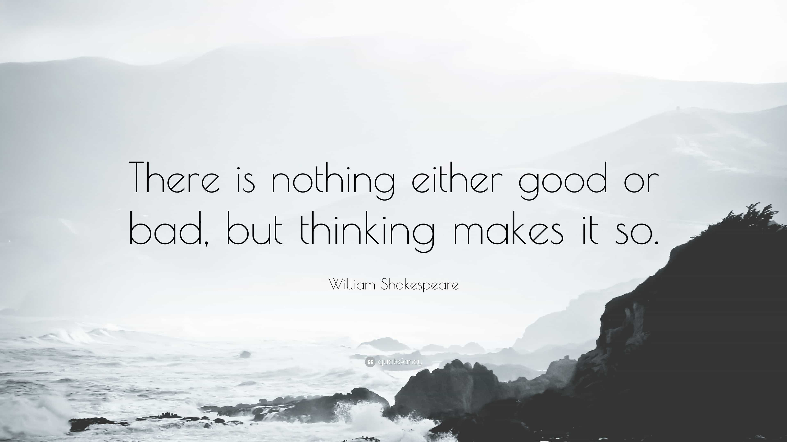

Corey is an iconoclast and the author of 'Man's Fight for Existence'. He believes that the key to life is for men to honour their primal nature. Visit his new website at primalexistence.com


Couple of weeks ago I published an article on types of things that men get angry about but shouldn’t. But since I haven’t offered a way to deal with anger itself, I have decided to compile some tips into this article. Most—if not all—solutions to anger that are available out there involve seeking professional help (which are pathetically unhelpful) and don’t address the specific type of anger that men experience. So, instead, this here is a zero-nonsense guide written by a man who has battled his own demons. I can’t promise you the results, but you must promise yourself dedication.
First, you must understand the nature of anger—specifically the one you possess based on your own life circumstances. Know that there are two types of anger: chronic anger due to past experience or living in a state of dissatisfaction, and acute anger which is the explosive anger of a man with short fuse. Of course, most men have a combination of the two, but I will be focusing mainly on chronic anger for this article.
Second, unlike those who say that anger is something problematic to be ridden of, know that anger in itself is not a bad thing—it’s an essential emotion for humans. Think of it like pain. Pain is an unpleasant but a necessary part of our existence. We feel pain so that we avoid and defend ourselves against things that harm us. Pain doesn’t become “bad” unless you feel it needlessly and without a way to stop it. And if that’s the kind of anger you are experiencing, then it is something that needs to be corrected.
Speaking of pain, anger is exactly that: an expression of emotional pain used to defend yourself. This is especially true for men who cover their hurt and despair under anger for the fear of being seen weak (this is also why most depressed men appear irritable or stone-cold rather than sad and in need of help).
So, don’t feel guilty about your anger; it doesn’t make you a bad person.
Much of your anger is caused by your mind drifting away from the present moment. Maybe you get angry by remembering something awful from the past. Due to our power of imagination, the bygone events will seem real and immediate. You can even get angry about something that might happen in the future when you let worries overcome you. By focusing on your life towards the present moment and living in the reality—as opposed to being inside your mind—you will be free of the phantoms that haunt you.

This doesn’t work for everyone, but understanding the root cause of your anger can be liberating and help you deal with your anger better. As a personal example, I know that whatever rage I feel towards manipulative and abusive women (even if the victim is another man) is augmented by my childhood experience: when I was seven and eight years old, I had female teachers who would pinch, slap, beat, and terrorize me non-stop. One abused me on a daily basis until I got too sick to go to school—all because my parents didn’t pay her the bribe she wanted. And that’s just one example from series of harsh experiences with women that I’ve been through in my life.
I understand that my horrid past exaggerates whatever anger I feel in the present moment, so I often remind myself to sever whatever I feel now from the past to not let it get out of control.

Taming anger doesn’t mean you’re being a listless wimp who enjoys getting shoved around. As I’ve said before, anger exists to help you. You’re either using anger to solve your problem or you’re just getting pissed because you can’t do anything about it. Really, what’s the point of getting angry if you’re not going to take action? So, whenever you find yourself burning up from the inside, ask yourself the Anger Question: Is my anger helping me? If the answer is no, cool down and disengage.

Ever got angry by a specific situation only to realize that you made a mistake and there’s nothing to be angry about? Did you notice just how quickly you cooled down? You can do the same with much of your anger by changing your mindset and perspective.
If you suffer from chronic anger because of your victim mentality that makes you feel as though you’ve been screwed over all your life, change it by being grateful for what you have and see yourself as someone who overcomes challenges. You are what you focus on. It’s also helpful to write exactly what’s pissing you off and why they’re making you angry. You’ll be surprised by just how different things appear when you take your thoughts out of your mind and onto a sheet of paper. Through that process, you’ll free yourself from distortions and gain a more realistic perspective.
Also, reading books on Buddhist thoughts and stoic philosophy can do wonders for your mind as well.
You probably have specific things that cause needless anger whenever you encounter them. In my previous article I used spectator sports as an example of something I decided to disengage from when I realized how frustrated and bitter I would get from watching them.
Catalog things that often anger you and either completely remove them from your life or decrease your exposure to them. Or, if you can’t completely avoid them, find a way to deal with them effectively before you even engage them. Just make sure you’re not running away from your problems.
I was reluctant to include this one as it seemed like a feminine way of dealing with problems. However, talking can be helpful in healthy dosages when done with the right people. Just don’t make a habit of it and seek attention and sympathy every time you face a problem; people will start to despise you for it. Also, try seeking someone wise whom you can trust. Just because someone cares about you, it doesn’t mean they’ll be helpful. Their best of intentions can make you feel even worse when they prove to be feckless.

Lot of men make the mistake of repressing their anger. Repressing damages your physical health and does nothing to solve your anger problem. Yes, sometimes you need to stop yourself from doing something you’ll be sorry for, but you can’t make repressing your default state. If you do, you’ll repress all your positive emotions along with it and suck your life energy dry. Instead, release when you can and simply re-channel or refocus your energy towards other activities that bring value to your life. It’s not going to be easy, but that’s part of the process.
Although it may start from your mind, anger is a physiological response and you should treat it as such. When you feel burning up, change your physiological state by doing an intense workout or by taking a cold shower—see if you’re still angry when you’re pushing your limits by placing yourself in mercy.
You can do all the above tips to temporarily relieve your anger and loosen its grip over you, but if you truly want to master not just anger, but your mind as well, you must practice daily meditation. Meditation is simple, but not easy.
To start, find a quiet place to sit, close your eyes, and breathe slow and deep breaths. Make an effort to become aware of your own internal state. Note your thoughts and how you feel, and find where you feel the tightness of anger. Imagine breathing into that area to release the tension.
The more you practice and the more consistently you do your meditation, the better your results will be.

Some of you may be frustrated that I haven’t really given away the “how to” for stopping and controlling anger. “Disengage, avoid, refocus, but how?!” some may ask. How? You just do it.
Really, there’s no trick to it, all that requires is your will. If you’re looking for some sort of mind hack or secret method that will make you go “Ah-ha!” and solve your anger problems in flash, you’re searching in vain. Nothing you read, including this article, will do anything for you unless dedicate yourself.
Like any mastery, mastering your anger is going to take time, effort, and discipline. Think of how much effort and energy you have to invest to maintain a strong and healthy body. Think of the patience and focus it takes to play a musical instrument at a professional level. How many hours and how many years does it take to master them? In comparison, how much time and effort do you dedicate towards mastering your mind, the most important and difficult thing of all to master? Think about that and only then will you begin to appreciate what it takes to master anger, your mind, and your self.
Read More: Human Resources Is Your Master